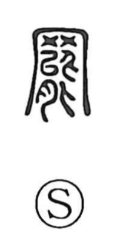

罷

Uncategorized
Kun: yameru | On: hi
to stop ・ to quit ・ dismissal
Explanation
This character is built from the net graph 网 and 能, which here depicts a water-dwelling insect. The ancient image is of such a creature ensnared in a net, exhausted from its attempts to escape. From that scene arise meanings of growing weary and weak, and, by natural extension, of giving up the struggle—ceasing, stopping, or quitting, as when one abandons further resistance.